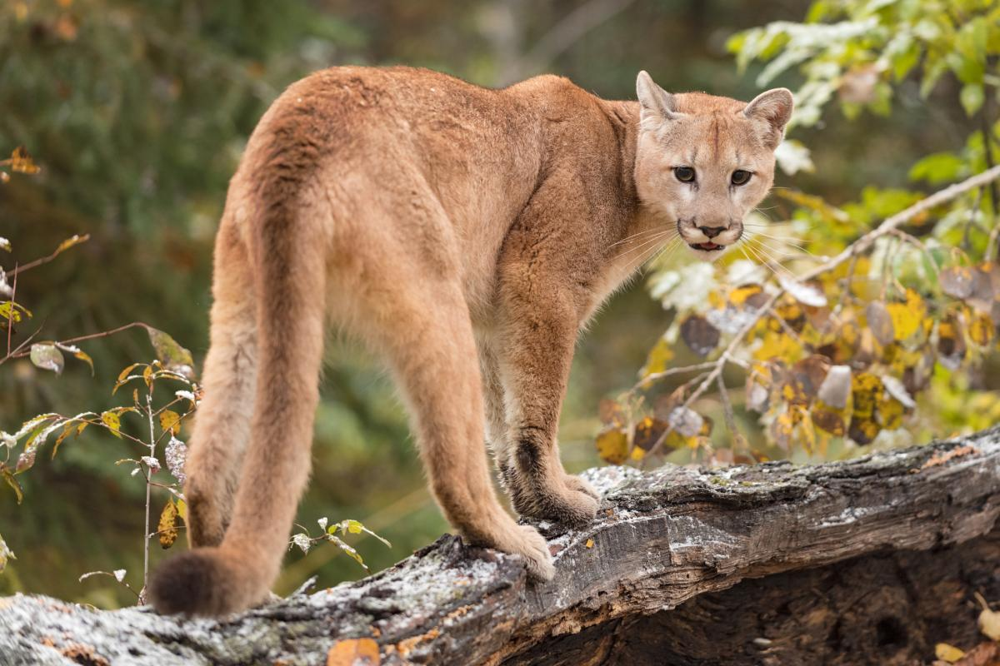

El puma es un mamífero fuerte y esbelto perteneciente a la familia Felidae. Se conoce por diferentes nombres ya que habita en muchos países de América, aunque su nombre científico es Puma concolor . Este animal es muy adaptable así que lo podemos encontrar en ambientes muy diversos desde Canadá hasta la Patagonia. Es el segundo mayor felino después del jaguar .
Los pumas son animales ágiles, fuertes y esbeltos. Su tamaño varía dependiendo de la región donde se encuentre. En la zona del ecuador suelen ser más pequeños que los ejemplares que viven en los extremos norte o sur del continente. Los machos pueden tener una longitud de 2.7 metros desde la nariz a la punta de la cola y pesar 60-85 kilos. La cola suele medir entre 0.7-1.0 metros. Las hembras son de menor tamaño.
Tiene una cabeza redonda con erguidas orejas y fuertes patas. Su cuello, mandíbula y colmillos están perfectamente adaptados para cazar y matar presas grandes, además posee garras retráctiles, cuatro en cada pata trasera y cinco en cada pata delantera, muy útiles para aferrar a la presa. Las extremidades son alargadas.
Es el más grande de la subfamilia felinae y se le incorpora a esa clasificación, ya que en vez de rugir, ronronea y emite sonidos con ciertas vocalizaciones, diferenciándose así del resto de gatos grandes. El color de su manto es homogéneo y variable, según la zona donde viva, así existen ejemplares gris plateado, rojizo e incluso dorado, con algunos parches cerca de la barbilla o en el cuello; también existen ejemplares melánicos.
